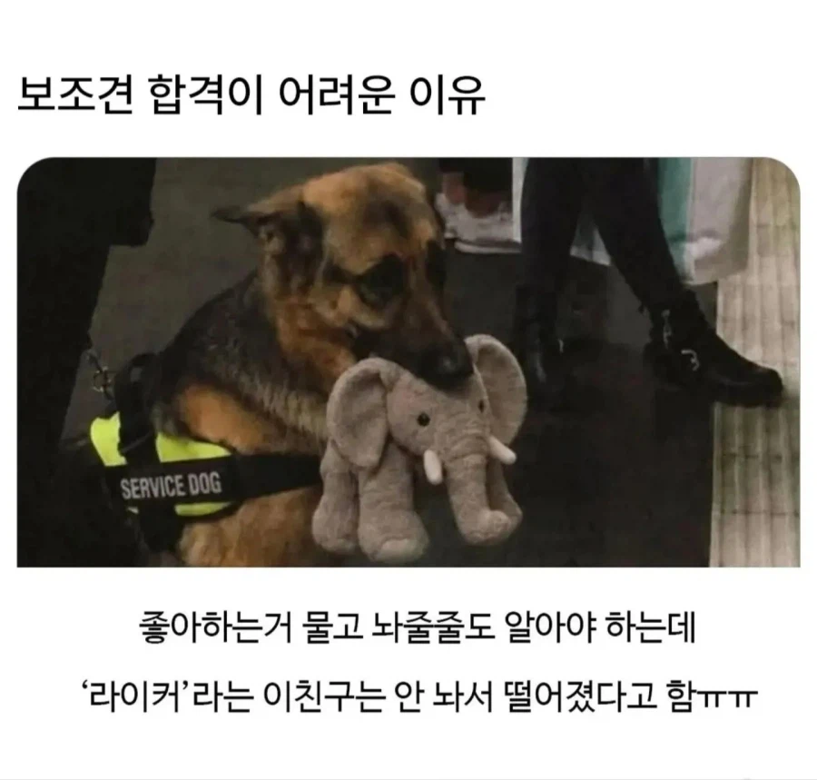

79 · 18 · 7 시간 전 · 원문

잉 나 이 인형 갖고시포 힝....
수집 당시 댓글 18개
댕멍꿀꿀 · 8 시간 전
240924 · 8 시간 전
귀 보니깐시무룩해있네 ㅋㅋㅋ
잠적자 · 8 시간 전
FURRY바게 · 8 시간 전
라이커여서 다행이다러버였으면 바로 으럇으럇임신해랏
↳ 답글 · dns · 7 시간 전
라이카였으면 바로 우주행
메루메루 · 7 시간 전
아니 이안에 마약이 있다 안카요?!
↳ 답글 · 인테리어사기꾼 · 7 시간 전
그건 탐지견... 보조견은 다르지.
↳ 답글 · 메루메루 · 7 시간 전
쟤한테 물어봐
↳ 답글 · 화면조정 · 7 시간 전
탐지견이랑 보조견이랑 훈련 매커니즘은 똑같음.둘다 자기 욕구통제를 빡세게 봄.
닉네임안만들어 · 7 시간 전
맹인안내견 훈련할 때 순대골목 들어가더라ㅋㅋㅋㅋ 거기서도 평정심을 유지해야된다고
함부르크훠궈복싱장 · 7 시간 전
킹끼리는 놓기 힘들긴해
뫼에엥 · 7 시간 전
흙사람 · 7 시간 전
갑자기 몽실이 생각나네 천재견인가보다 그정도나 알았지 고기 먹고있는거 뱉으라니까 뱉는거보고 깜짝놀람
↳ 답글 · 베충아이리와짖어 · 7 시간 전
그 바닷가 선장님이 키우는 골드리트리버 몽실이 맞나?
↳ 답글 · 흙사람 · 6 시간 전
맞
으으으으으으그 · 7 시간 전
ㅋㅋㅋㅋㅋ 커여워
주8일휴가희망 · 6 시간 전
라이코스였음 잘했다
디어센트 · 6 시간 전
댓글
수집 당시 댓글 18개
댕멍꿀꿀 · 8 시간 전
240924 · 8 시간 전
귀 보니깐
시무룩해있네 ㅋㅋㅋ
잠적자 · 8 시간 전
FURRY바게 · 8 시간 전
라이커여서 다행이다
러버였으면 바로 으럇으럇임신해랏
· dns · 7 시간 전
라이카였으면 바로 우주행
메루메루 · 7 시간 전
아니 이안에 마약이 있다 안카요?!
· 인테리어사기꾼 · 7 시간 전
그건 탐지견... 보조견은 다르지.
· 메루메루 · 7 시간 전
쟤한테 물어봐
· 화면조정 · 7 시간 전
탐지견이랑 보조견이랑 훈련 매커니즘은 똑같음.
둘다 자기 욕구통제를 빡세게 봄.
닉네임안만들어 · 7 시간 전
맹인안내견 훈련할 때 순대골목 들어가더라ㅋㅋㅋㅋ 거기서도 평정심을 유지해야된다고
함부르크훠궈복싱장 · 7 시간 전
킹끼리는 놓기 힘들긴해
뫼에엥 · 7 시간 전
흙사람 · 7 시간 전
갑자기 몽실이 생각나네 천재견인가보다 그정도나 알았지 고기 먹고있는거 뱉으라니까 뱉는거보고 깜짝놀람
· 베충아이리와짖어 · 7 시간 전
그 바닷가 선장님이 키우는 골드리트리버 몽실이 맞나?
· 흙사람 · 6 시간 전
맞
으으으으으으그 · 7 시간 전
ㅋㅋㅋㅋㅋ 커여워
주8일휴가희망 · 6 시간 전
라이코스였음 잘했다
디어센트 · 6 시간 전